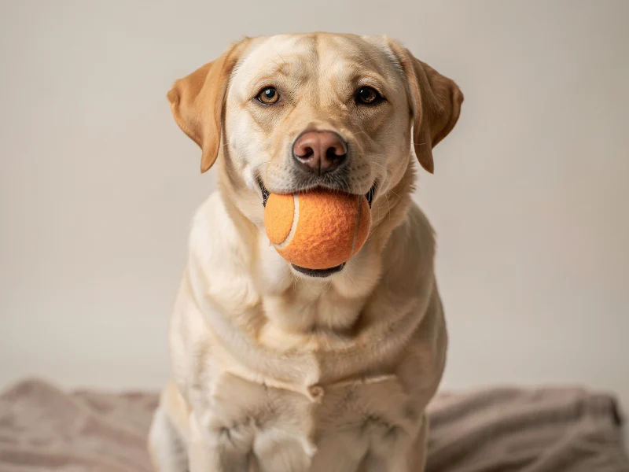
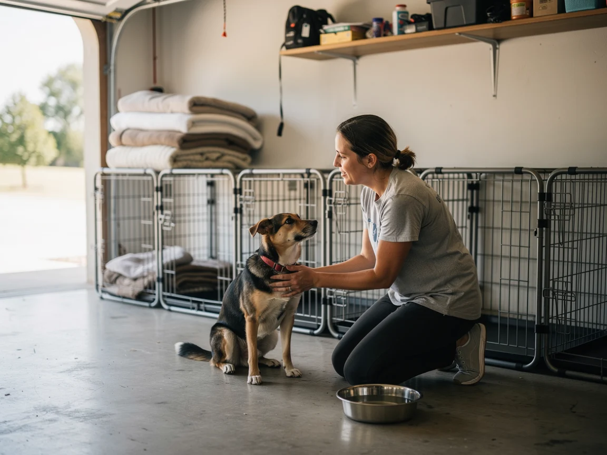

Buddy
Labrador mix · 2 yrs old
"Buddy loves belly rubs, tennis balls, and greeting everyone like they're his best friend."
Adopt BuddyVolunteer-run · Local shelter
We're a small, volunteer-run shelter that believes every dog, cat, and bunny deserves a soft bed, a full bowl, and a family who shows up.

Buddy
Labrador mix · 2 yrs old
"Buddy loves belly rubs, tennis balls, and greeting everyone like they're his best friend."
Adopt BuddyA few of the friends waiting to meet you. Pick a bookmark to turn to their page.
Come by during open hours or book a meet-and-greet with an animal you like.
Fill out a short adoption form so we can make sure it's a good match, both ways.
Pay a small adoption fee that covers vaccines and spay/neuter, then head home together.

"No animal leaves here without a soft place to land — even if that place is just us, for now."
Furever Home started in a garage with three fosters and a lot of hope. Today we're a small team of volunteers who take in strays, injured animals, and pets whose families could no longer care for them — and get them healthy, comfortable, and ready for a new home.
We rely entirely on adoption fees, donations, and people willing to give an afternoon a week. If that's you, we'd love the help.
Walk dogs, socialize cats, help at adoption events, or foster an animal in your own home.
Sign up to volunteerEvery dollar goes straight to food, vet care, and shelter for animals waiting on a home.
Donate now"The team knew every animal by name and personality. We found Milo within a week and the whole process felt warm, not transactional."
"Fostering through Furever Home was the easiest way to help without a lifelong commitment — they support you the whole way."